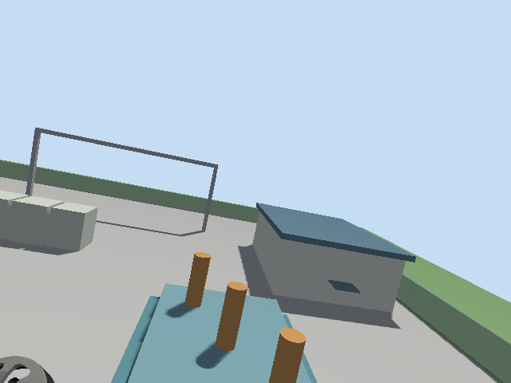
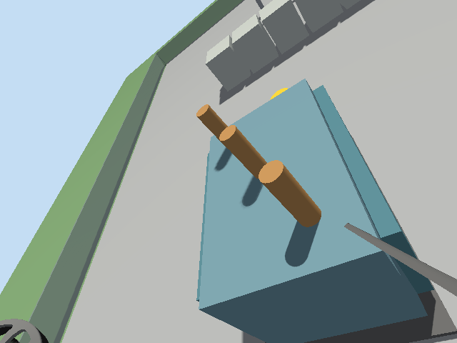
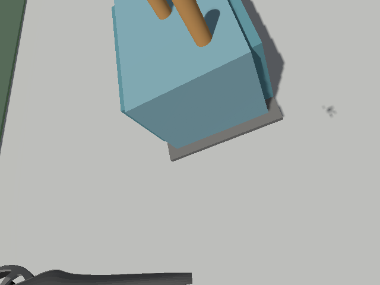
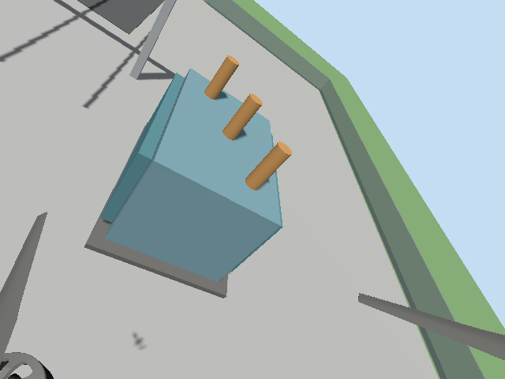
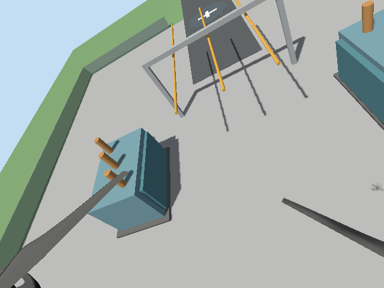

01
Transformer A west
Time: 2026-09-20T22:41:37
Target NED: -12.0, 28.0, -10.0 m
Measured NED: -11.622, 27.171, -10.064 m
Camera: CAPTURED

ROS 2 Jazzy · PX4 SITL · Gazebo · Camera evidence
Result: Completed — returned, landed and disarmed
Assets inspected: 5 / 5
Generated: 2026-09-20T22:42:54
Camera status reports frame capture only; no defect classifier is claimed.
Time: 2026-09-20T22:41:37
Target NED: -12.0, 28.0, -10.0 m
Measured NED: -11.622, 27.171, -10.064 m
Camera: CAPTURED

Time: 2026-09-20T22:41:46
Target NED: 12.0, 28.0, -10.0 m
Measured NED: 11.019, 27.610, -10.123 m
Camera: CAPTURED

Time: 2026-09-20T22:41:56
Target NED: -12.0, 47.0, -10.0 m
Measured NED: -11.539, 45.982, -10.300 m
Camera: CAPTURED

Time: 2026-09-20T22:42:06
Target NED: 12.0, 47.0, -10.0 m
Measured NED: 10.916, 46.840, -10.230 m
Camera: CAPTURED

Time: 2026-09-20T22:42:14
Target NED: 0.0, 50.0, -18.0 m
Measured NED: 0.539, 49.778, -17.002 m
Camera: CAPTURED
